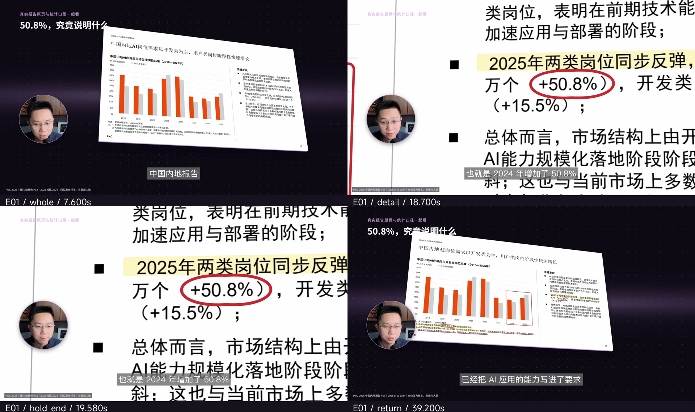
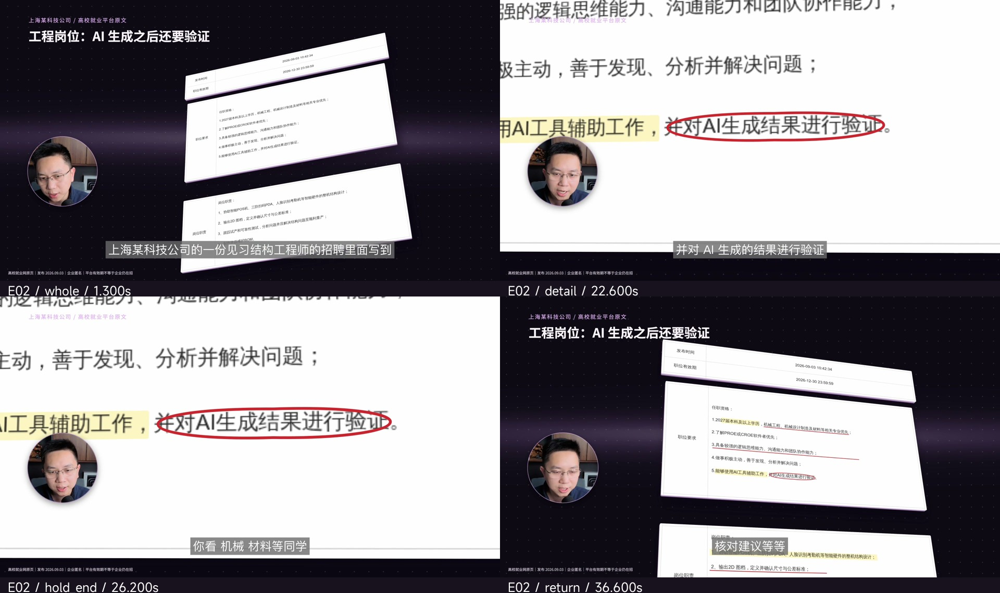
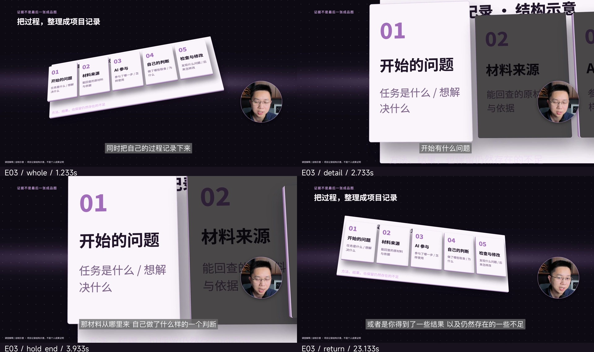
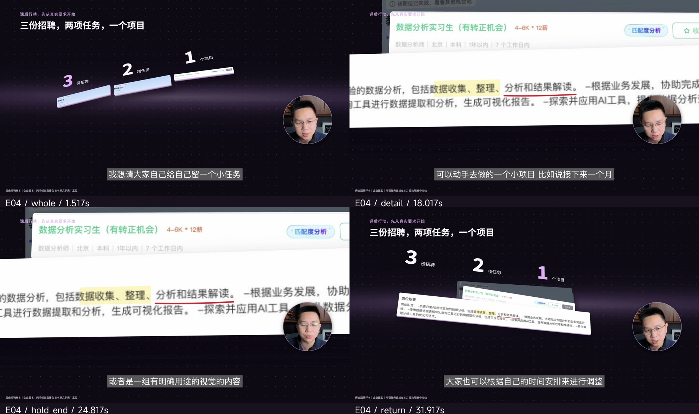

E01 · 40.0s原件全貌到数字特写全景细节抵达停留末端返回整体四状态与观察说明识别同一份真实报告及原页，不把截图退成背景。在原页印出的数字上圈选并大幅推近。比较抵达与停留末端，观察同一原文持续慢推。回到原页与统计口径，保留年份、范围及限制。原页摘录：PwC《2026全球人工智能就业晴雨表》中国内地报告第13页。数字是案例中的历史招聘发布样本，不是未来课程默认事实。未播放
E02 · 37.2s岗位条件与验证条款全景细节抵达停留末端返回整体四状态与观察说明先建立匿名岗位原件、日期和条件的上下文。在真实句子中高亮AI辅助，用红圈定位验证要求。主要阅读单位完整；必要条件随原文保持可见。推拉和摇移服务于职责与条件的解释，回到材料关系。高校就业网公开历史岗位的匿名教学摘录；保留必要日期、学历与验证条款，不分发可反查企业身份的原始招聘链接。未播放
E03 · 24.1s项目记录的纵深与归组全景细节抵达停留末端返回整体四状态与观察说明先把五份记录看作同一个整体。通过厚度、遮挡、层级和镜头移动进入当前记录。阅读时持续运动；配角退让但纸面保持实心。回到事先设计的整体；学习机制，不复制五张卡的数量和编排。讲师自制教学图解，不是报告或岗位截图；适用于抽象方法与过程说明。未播放
E04 · 33.5s课后练习中的原文任务全景细节抵达停留末端返回整体四状态与观察说明先建立课后任务与三份岗位材料的关系。直接在职责截图内部标出工作任务。原文与标记一起放大和移动，完整保留当前短语。末尾练习和回顾中的引用同样检查，不漏掉后段的独立摘抄卡。匿名历史招聘截图与讲师自制练习结构；招聘职责用原图高亮和下划线，3/2/1是教学结构。未播放